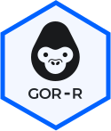

See full documentation at https://wuxi-nextcode.github.io/gorr/
devtools
devtools::install_github("wuxi-nextcode/gorr")In this example, we’re going to run a simple remote gor query using the gorr package.
First load the gorr package, the tidyverse package is recommended in general, but not required for this example
First we’ll need to establish a connection to our APIs. To do that we’ll need to call platform_connect and provide it with the relevant parameters pointing to the api-services, i.e. api_key and project. You get the API Key from the /api-key-service/token endpoint on your CSA instance, and you can find a list of projects available to you in CSA as well, remember to use the internal project name. Once you have those two things, you have everything you need to make a connection object:
api_key <- "your_api_key_here"
conn <- platform_connect(api_key, project = "test_proj")Alternatively, one can define the environment variables GOR_API_KEY and (optionally) GOR_API_PROJECT. This can also be done for your R session exclusively by including those lines in a .Renviron file in your working directory. When these variables are set you can call platform_connect without specifying api_key or project:
conn <- platform_connect() # uses both GOR_API_KEY and GOR_API_PROJECT
conn <- platform_connect(project = "test_proj") # uses only GOR_API_KEY If everything goes as planned, we’ll have a conn object ready to be passed into the gor_query and other functions interacting with the APIs.
Now gor_query can be used to run a gor query:
result <- gor_query("gor #dbsnp# | top 100", conn)The results come back as an R data.frame:
print(result)By default, character columns are returned as is, i.e. not converted to factors. This allows for more flexibility on the user-end, but as an example here we an turn all character columns into factors:
result <-
result %>%
mutate_if(is.character, factor)It should also be noted that larger gor queries can be constructed inside a string block and piped directly into the gor_query function:
chr21_results <- "
gor -p chr21 #dbsnp#
| where len(reference)=1 and len(allele)=1
| calc snptype reference+'/'+allele
| hide rsIDs
| top 100" %>%
gor_query(conn)
print(chr21_results)We can list available phenotypes in the phenotype-catalog using get_phenotypes and pass the connection object as before:
get_phenotypes(conn)If the goal is to work with a single phenotype we can either fetch an existing phenotype from the catalog by passing the name of the phenotype and the connection object to the get_phenotype function or by creating a new phenotype using create_phenotype method. In both cases a phenotype object is returned containing the phenotype’s attributes.
phenotype <- create_phenotype(name, conn)For more details on how to interact with the Phenotype Catalog Services, please see articles: Phenotype services, Phenotype matrix services, Phenotype categories and Phenotype playlists.